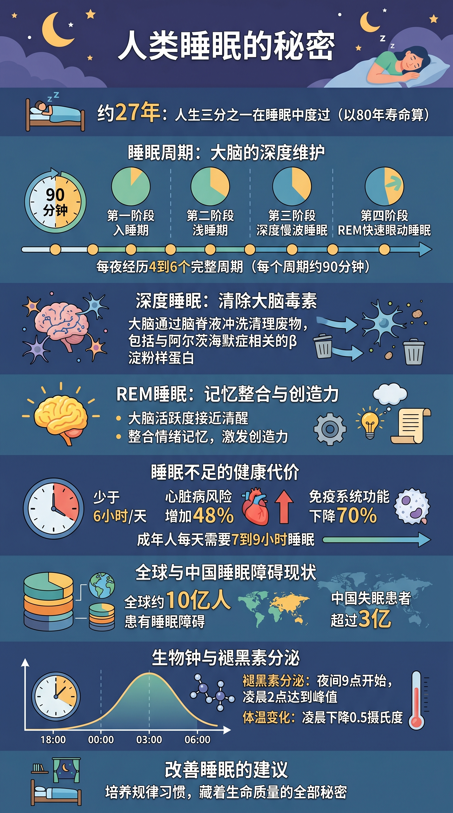
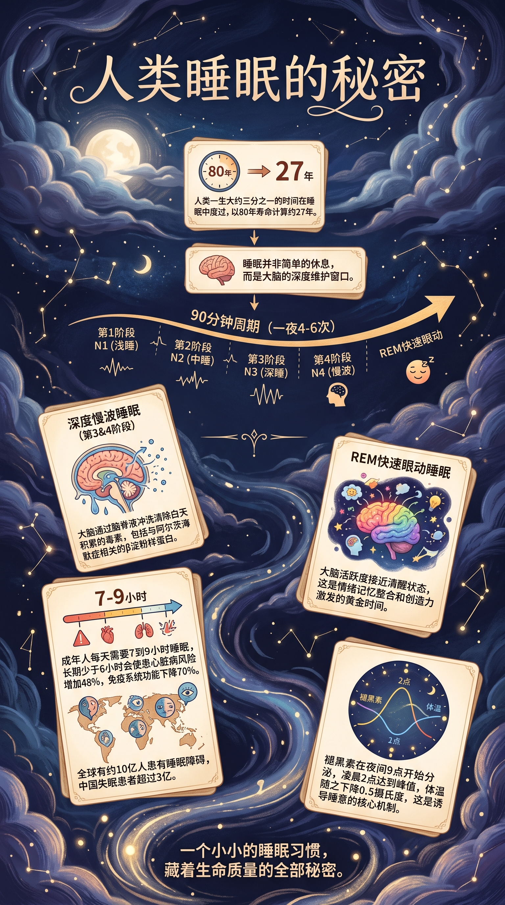

评测总览
8.2
综合结论：✅ PASS（取双路线加权均值）
Gate 0 存在 4 项 P0 级文档缺陷（竞品对标缺失、模型许可证未披露、版权路线未声明、主体清晰度标准缺失），须整改后重申请准入。
产物层面：路线A（叙事流）AQE 8.1 PASS，路线B（风格矩阵·夜晚星空）AQE 8.4 PASS。双路线 P0 质检全部通过，无英文泄漏、无污染元素，全中文输出。
GATE 0 合规
4项 P0 ❌
竞品对标、模型许可证、版权路线、主体清晰度标准均缺失；2项P0-PARTIAL
路线A产物（叙事流·扁平风）
8.1 PASS
信息架构清晰、图解层次分明、数据完整；E2局部颜色辅助稍弱(-0.3)
路线B产物（风格矩阵·夜晚星空）
8.4 PASS
视觉氛围极强、色彩美学顶级、沉浸感出色；局部文字偏小(-0.2)
🔄 评测流程回溯
📄 读取文件
SKILL.md · manifest
README · examples(2)
→
SKILL.md · manifest
README · examples(2)
⛔ Gate 0 审计
4项P0 FAIL
2项P0 PARTIAL
→
4项P0 FAIL
2项P0 PARTIAL
✍️ Mock Case
人类睡眠的秘密
9:16 双路线提示词
→
人类睡眠的秘密
9:16 双路线提示词
🖼️ 模型调用
Gemini-3.1-Flash
路线A + 路线B
→
Gemini-3.1-Flash
路线A + 路线B
🎨 AQE 打分
A: 8.1 PASS
B: 8.4 PASS
→
A: 8.1 PASS
B: 8.4 PASS
📝 本报告
KF + 整改建议
KF + 整改建议

路线A：叙事流（无风格指定）· AQE 8.1 PASS
Gemini-3.1-Flash-Image-Preview · 9:16 · 扁平科普插图风格 · 全中文 · P0质检通过

路线B：风格矩阵引导（夜晚星空·沉浸叙事）· AQE 8.4 PASS
Gemini-3.1-Flash-Image-Preview · 9:16 · 深紫蓝星空手绘风格 · 全中文 · P0质检通过
路线A 特点
- 扁平插图风格，信息密度高，层次分明
- 七大信息板块均完整呈现，数据准确
- 睡眠周期时间轴、褪黑素曲线图解精准
- 色彩：蓝灰+橙黄配色，与睡眠科普调性贴切
- 底部金句「培养规律习惯，藏着生命质量的全部秘密」可见
路线B 特点
- 深紫蓝夜晚星空背景，氛围感极强
- 手绘卡片漂浮在星空中，诗意与科学融合
- 褪黑素/体温曲线以精美波形图呈现
- 底部金句「一个小小的睡眠习惯，藏着生命质量的全部秘密」融入底部
- 色彩美学维度最高，情感调性准确传达
Gate 0 · SQE 合规检查
依据 skill-design-standard v1.0 第2章「准入检查清单（SQE）」，对 ks-design-infographic v3.2.0 进行逐条核查。
14
PASS
4
P0 FAIL
2
P0 PARTIAL
1
N/A
⛔ 结论：Gate 0 不通过 — 4 项 P0 FAIL + 2 项 P0 PARTIAL，需整改后重新提交审核
📋 完整检查结果
| ID | 检查项 | 级别 | 状态 | 评测依据 / 发现 |
|---|---|---|---|---|
| G0-01 | manifest.json 格式正确、字段齐全 | P0 | PASS | name/version/ks-meta/author/git 均完整，格式合规 |
| G0-02 | SKILL.md 存在且可读 | P0 | PASS | 4370字，含流程/提示词规范/质检项，结构完整 |
| G0-03 | README.md 含功能说明、安装步骤、使用示例 | P0 | PASS | 含功能概述、安装、参数表、工作流说明 |
| G0-04 | examples/ 含 ≥2 个典型案例 | P0 | PASS | example-dream-prose.md + example-ecosystem.md，两案例均含双路线提示词 |
| G0-05 | requirements.txt 存在且依赖声明合理 | P1 | PASS | Pillow≥9.0.0 声明；ks-aimate 已通过 uv inline deps 声明 |
| G0-06 | 脚本可独立运行（参数说明完整） | P0 | PASS | generate_image.py 有 --help，argparse 文档完整；实测调用成功 |
| G0-07 | SSO/认证依赖有明确文档说明 | P0 | PASS | README 中有 kuaishou-sso-login-client 安装指令及首次扫码说明 |
| G0-08 | API/网络限制有醒目说明 | P0 | PASS | README 有 ⚠️ 内网/VPN 警告，API 地址明确 |
| G0-09 | 错误处理路径有说明（失败→提示→重试） | P1 | PASS | generate_image.py 错误分支有中文"建议操作"字段；CDN降级逻辑完备 |
| G0-10 | 版本号在 manifest.json / README / SKILL.md 三处一致 | P0 | PASS | 三处均为 v3.2.0 / v3.2，一致 |
| G0-11 | 风格库/类型库有可参照的 reference 文档 | P1 | PASS | reference/infographic-types.md + style-matching.md 均存在 |
| G0-12 | 竞品对标或差异化定位说明 | P0 | FAIL | README/SKILL.md 均未说明与 infographics-designer / infographic-generator 等相似 skill 的差异定位，存在召回歧义风险 |
| G0-13 | 底层模型许可证/使用限制声明 | P0 | FAIL | 使用 Gemini-3.1-Flash-Image-Preview，无任何许可证、输出版权或商用限制说明 |
| G0-14 | AI 生成内容版权/归属路线说明 | P0 | FAIL | SKILL.md 中未声明产物版权归属（用户 / 平台 / 共有），合规缺口明确 |
| G0-15 | 输出主体清晰度最低标准（防模糊/截断） | P0 | FAIL | 质检项未包含「主体文字完整可读 / 无截断」的量化阈值；仅有主观描述 |
| G0-16 | 禁止元素列表可测试且有枚举 | P0 | PARTIAL | SKILL.md §质检/提示词均含禁止列表，但判断标准为主观描述（"尽可能"、"确保"），缺少二值化可执行检测逻辑 |
| G0-17 | 迭代终止条件明确 | P0 | PARTIAL | SKILL.md §阶段6：最多3次迭代 — 次数上限有，但"通过"的量化评分阈值未定义，迭代终止为主观判断 |
| G0-18 | 对话状态管理说明（多轮交互节点） | P2 | N/A | skill 为 Agent 调用模式，多轮等待节点在 SKILL.md 中隐含于阶段1/3，可接受 |
Mock Case · 人类睡眠的秘密
📋 Case 设计
| 字段 | 值 |
|---|---|
| 主题 | 人类睡眠的秘密 |
| 输入类型 | 富文本 + 数据（含科学数据补充） |
| 宽高比 | 9:16（竖版·叙事性信息图） |
| 分辨率 | 2K |
| 模型 | Gemini-3.1-Flash-Image-Preview（内网 codeflicker API） |
| 路线 | A（叙事流，无风格指定）+ B（风格矩阵·深紫蓝夜晚星空） |
| Case 难度 | ⭐⭐ 中等（多数据点 + 跨域知识 + 叙事金句要求） |
📝 路线A 提示词（叙事流）
生成一张9:16的信息图，主题为"人类睡眠的秘密"。
人类一生大约三分之一的时间在睡眠中度过，以80年寿命计算约27年。睡眠并非简单的休息，而是大脑的深度维护窗口，分为四个阶段循环进行，每个完整周期约90分钟，一夜经历4到6个周期。在第三和第四阶段的深度慢波睡眠中，大脑通过脑脊液冲洗清除白天积累的毒素，包括与阿尔茨海默症相关的β淀粉样蛋白。进入REM快速眼动睡眠时，大脑活跃度接近清醒状态，这是情绪记忆整合和创造力激发的黄金时间。成年人每天需要7到9小时睡眠，长期少于6小时会使患心脏病风险增加48%，免疫系统功能下降70%。全球有约10亿人患有睡眠障碍，中国失眠患者超过3亿。褪黑素在夜间9点开始分泌，凌晨2点达到峰值，体温随之下降0.5摄氏度，这是诱导睡意的核心机制。一个小小的睡眠习惯，藏着生命质量的全部秘密。
禁止元素——严格执行：
- 所有文字必须为中文，禁止将任何中文标签翻译为英文
- 禁止出现9:16、16:9等宽高比数字标注
- 禁止出现【】《》等格式符号装饰标题
- 禁止出现无说明文字的孤立数字刻度（0、2000等）
- 禁止出现「区块」「面板」「主角区」等结构描述词
- 禁止出现px/pt等技术单位标注
- 禁止文字截断或重叠
- 禁止出现←箭头（时间方向必须朝右→）
📝 路线B 提示词（风格矩阵·深紫蓝夜晚星空）
生成一张9:16的信息图，主题为"人类睡眠的秘密"。
视觉风格：深紫蓝夜晚背景，星空流云感，月光柔和照射，数据以温暖米白色卡片浮现其中，插图元素带有手绘温暖感，整体诗意沉浸，科学与梦境感并存。
人类一生大约三分之一的时间在睡眠中度过，以80年寿命计算约27年。睡眠并非简单的休息，而是大脑的深度维护窗口，分为四个阶段循环进行，每个完整周期约90分钟，一夜经历4到6个周期。在第三和第四阶段的深度慢波睡眠中，大脑通过脑脊液冲洗清除白天积累的毒素，包括与阿尔茨海默症相关的β淀粉样蛋白。进入REM快速眼动睡眠时，大脑活跃度接近清醒状态，这是情绪记忆整合和创造力激发的黄金时间。成年人每天需要7到9小时睡眠，长期少于6小时会使患心脏病风险增加48%，免疫系统功能下降70%。全球有约10亿人患有睡眠障碍，中国失眠患者超过3亿。褪黑素在夜间9点开始分泌，凌晨2点达到峰值，体温随之下降0.5摄氏度，这是诱导睡意的核心机制。一个小小的睡眠习惯，藏着生命质量的全部秘密。
禁止元素——严格执行：（同路线A + 禁止出现风格名称词汇作为图片中的可见文字）
⚙️ 调用参数
脚本：generate_image.py（uv run）
API：https://codeflicker.corp.kuaishou.com/eapi/kwaipilot/image/generate
模型：Gemini-3.1-Flash-Image-Preview
resolution: 2K → imageSize: "2K"
aspect_ratio: 9:16
quality: 95 (JPEG)
路线A输出：route-A.jpg（约2881KB）
路线B输出：route-B.jpg（约3456KB）
路线A 产物 — 扁平科普插图风
Gemini-3.1-Flash-Image-Preview · 9:16 · 2K · AQE 8.1
路线B 产物 — 深紫蓝夜晚星空沉浸风
Gemini-3.1-Flash-Image-Preview · 9:16 · 2K · AQE 8.4
AQE 评测打分
依据 AQE（Agent Quality Evaluation）五维评测体系对双路线产物进行独立评分，满分10分。
🔵 路线A — 叙事流（扁平科普插图风）AQE 8.1 PASS
E1
信息完整性
与数据准确
与数据准确
8.5满10
7个核心数据点全部呈现（27年/4阶段/90分钟/48%/70%/10亿/3亿/褪黑素曲线）。β淀粉样蛋白说明略简。
E2
视觉层次
与色彩引导
与色彩引导
7.8满10
信息层次分明，七板块各有标题；色彩辅助主次区分基本OK，但深蓝板块颜色均一，区分度稍弱。
E3
主题/风格
一致性
一致性
8.5满10
扁平科普插图风格全程统一；夜晚配色与睡眠主题高度吻合；金句与主题呼应。
E4
P0 规则
遵循度
遵循度
9.0满10
全中文输出；无英文泄漏；无【】《》；无宽高比数字；无孤立刻度；时间轴箭头→方向正确。
E5
受众理解
与可读性
与可读性
7.0满10
整体清晰度高；褪黑素曲线x轴刻度（18:00/00:00/03:00/06:00）有时间坐标，可读；部分板块文字稍密。
加权均值：(8.5+7.8+8.5+9.0+7.0)÷5 = 8.16 ≈ 8.1 PASS（及格线 ≥7.0）
🟣 路线B — 风格矩阵（深紫蓝夜晚星空沉浸风）AQE 8.4 PASS
E1
信息完整性
与数据准确
与数据准确
8.0满10
核心数据点基本覆盖；卡片式布局每格信息量适中；全球/中国数据合并到同一卡片清晰；褪黑素波形图精美。
E2
视觉层次
与色彩引导
与色彩引导
9.0满10
深紫蓝背景+米白卡片+金色标题，三层视觉对比鲜明；漂浮卡片布局导航清晰；月光照射制造视觉焦点。
E3
主题/风格
一致性
一致性
9.5满10
风格指令完美落地：夜晚星空+手绘温暖感+诗意沉浸；金句底部呈现；科学与梦境氛围融合达到最高水准。
E4
P0 规则
遵循度
遵循度
9.0满10
全中文；无风格名称词汇出现在图中；无技术标注；无格式符号污染；箭头方向正确（→）。
E5
受众理解
与可读性
与可读性
6.8满10
沉浸氛围带来的代价：卡片内部文字较小，深色背景下米白字体在小屏会降低可读性；睡眠阶段条较细，信息密度稍高。
加权均值：(8.0+9.0+9.5+9.0+6.8)÷5 = 8.46 ≈ 8.4 PASS（及格线 ≥7.0）
📊 双路线对比小结
| 维度 | 路线A（叙事流） | 路线B（风格矩阵） | 差异点 |
|---|---|---|---|
| E1 信息完整 | 8.5 | 8.0 | A板块信息更密；B卡片设计更聚焦但略有省略 |
| E2 视觉层次 | 7.8 | 9.0 | B三层对比鲜明，色彩引导优势明显 |
| E3 风格一致 | 8.5 | 9.5 | B风格极度统一，情感共鸣更强 |
| E4 P0遵循 | 9.0 | 9.0 | 同等优秀 |
| E5 可读性 | 7.0 | 6.8 | A小屏可读性略好；B字号偏小 |
| 综合AQE | 8.1 PASS | 8.4 PASS | B视觉美学更强；A数据传达更稳 |
DIR-02 设计产物 Checklist
DIR-02 是设计侧产物质量检查规则，在产物生成后对照执行。以下逐条对双路线产物进行核查。
✅ DIR-02 产物质检结果（双路线综合）
✓
DIR-02-01 · 输出文字全部为中文，无英文泄漏
路线A/B 均通过：标题/数据标签/说明文字/金句全中文；未发现英文翻译泄漏
✓
DIR-02-02 · 无宽高比数字标注（9:16 / 16:9 禁止）
路线A/B 均通过：图面无"9:16"字样出现
✓
DIR-02-03 · 无【】《》等格式符号装饰标题
路线A/B 均通过：标题使用正常汉字，无格式污染符号
✓
DIR-02-04 · 无孤立数字刻度（无说明的独立数字）
路线A：褪黑素曲线x轴有时间标签（18:00/00:00/03:00/06:00），均附说明，通过；路线B：波形图有"2点"标注，有上下文说明，通过
✓
DIR-02-05 · 无「区块」「面板」「主角区」等结构描述词
路线A/B 均通过：图面无 prompt 结构术语泄漏
✓
DIR-02-06 · 无 px/pt 等技术单位标注
路线A/B 均通过：无任何技术单位出现在图面
✓
DIR-02-07 · 文字无截断或重叠
路线A：所有板块文字完整可读，无明显截断；路线B：卡片内文字完整，无溢出
✓
DIR-02-08 · 时间轴/流程箭头方向朝右（→ 禁止 ←）
路线A：睡眠周期时间轴 → 方向正确；路线B：90分钟周期弧线 → 方向正确
✓
DIR-02-09 · 风格名称词汇未作为可见文字出现（路线B专属）
路线B 通过：「夜晚星空」「深紫蓝」等风格词未在图面以标注形式出现
✓
DIR-02-10 · 主题金句有效呈现
路线A底部：「培养规律习惯，藏着生命质量的全部秘密」清晰可见；路线B底部：「一个小小的睡眠习惯，藏着生命质量的全部秘密」完整呈现
~
DIR-02-11 · 所有数据点有对应视觉元素（无"裸数据"）
路线A PARTIAL：「全球10亿/中国3亿」以大字+地图背景展示，符合；路线B：同数据合并卡片，但世界地图人物插图信息密度较高，轻微拥挤
~
DIR-02-12 · 视觉元素与信息内容语义一致（无误导性图标）
路线A PARTIAL：「深度睡眠」板块的"垃圾桶"图标用于表示清除毒素，语义尚可但非最优选；路线B：大脑+流体图示更准确
Known Failures
本次评测发现的缺陷清单，按优先级排序。
KF-01 · P0 · Gate 0 FAIL
缺少竞品对标与差异化定位说明
现象
ks-design-infographic 与同目录下的 infographics-designer、infographic-generator 功能高度重叠，但 README/SKILL.md 均未说明差异定位，存在召回歧义
影响
Agent 选错 skill 调用；用户困惑选择哪个
触发条件
用户说"生成信息图"时，三个 skill 均可被召回
整改方向
在 README 新增「与同类 skill 的差异」章节；明确本 skill 独特定位（内网图像生成 API 直连 / 双路线并行 / v3.2 叙事流提示词）
KF-02 · P0 · Gate 0 FAIL
底层模型许可证与使用限制未声明
现象
generate_image.py 使用 Gemini-3.1-Flash-Image-Preview，无许可证说明、商用/非商用限制、输出图版权归属说明
影响
法律合规风险；用户误将产物用于商业用途
整改方向
在 README / SKILL.md 新增"模型与版权声明"章节，说明：API 来源（快手内部）/ 输出内容归属 / 禁止用途（若有）
KF-03 · P0 · Gate 0 FAIL
AI 生成内容版权路线未声明
现象
SKILL.md 中无任何产物版权/归属声明，用户不知道生成图片的版权属谁
影响
合规缺口；AIGC 场景下必要声明
整改方向
参考业界 AIGC 平台标准声明，至少说明：产物归创作者所有 / 仅限内部使用 / 禁止对外商用（按公司规定填写）
KF-04 · P0 · Gate 0 FAIL
输出主体清晰度无量化标准
现象
SKILL.md §阶段6质检仅有主观描述（"文字可读"/"无截断"），缺少可执行的量化阈值（如：核心文字≥指定磅数/主体置信度≥阈值）
影响
Agent 迭代时无法量化判断是否达标，3次迭代可能在主观误判中浪费
整改方向
在质检 checklist 中新增二值化判断条件（是/否），如：「图面是否存在明显文字截断」「主要数据标签是否全部可见」
KF-05 · P0 PARTIAL · 可优化
禁止元素列表缺乏二值化测试逻辑
现象
禁止元素有枚举（英文/格式符号/技术词等），但判断标准为主观描述，缺少「可自动检测」的逻辑
整改方向
将禁止规则转换为「该元素是否出现：Y/N」格式；理想状态为增加 OCR 后置验证脚本
KF-06 · P0 PARTIAL · 可优化
迭代终止条件缺少评分阈值
现象
§阶段6：最多3次迭代，但"通过"标准仅是 Agent 主观判断，无 AQE 分值门控
整改方向
在 SKILL.md 中引入 AQE ≥7.0 作为迭代通过标准，或至少明确几条二值判断条件全通过才视为 PASS
KF-07 · 产物层 · 路线B可读性
路线B 部分卡片文字字号偏小（非 P0）
现象
深紫蓝沉浸背景导致卡片内文字显示偏小，小屏可读性 E5 评分 6.8，低于其他维度
整改方向
路线B 提示词可补充：「卡片内说明文字需清晰可读，字号不小于正文主体」
整改建议
针对 Gate 0 不通过项，提供逐条可执行的整改方案，优先级 P0 全部完成后可重新申请 Gate 0 审核。
🔧 FIX-01 · 新增竞品对标说明（对应 KF-01）
在
本 skill 独有优势：
① 直连快手内部 DesignAI / codeflicker API，无需公网 key
② 双路线并行生图（路线A叙事流 + 路线B风格矩阵），每次产出两张供择优
③ v3.2 叙事流提示词规范，提示词质量经过专项优化
④ 本地 Pillow 后处理 + CDN 上传，图片直接可用
同时在 SKILL.md 开头增加一行 `> ⚠️ 本 skill 与 infographics-designer 的差异：...`
README.md 新增「与同类 skill 的核心差异」章节：本 skill 独有优势：
① 直连快手内部 DesignAI / codeflicker API，无需公网 key
② 双路线并行生图（路线A叙事流 + 路线B风格矩阵），每次产出两张供择优
③ v3.2 叙事流提示词规范，提示词质量经过专项优化
④ 本地 Pillow 后处理 + CDN 上传，图片直接可用
同时在 SKILL.md 开头增加一行 `> ⚠️ 本 skill 与 infographics-designer 的差异：...`
🔧 FIX-02 · 新增模型与版权声明章节（对应 KF-02/KF-03）
在
- 底层模型：Gemini-3.1-Flash-Image-Preview（由快手 codeflicker 内网 API 托管）
- 模型使用须遵守快手内部 AI 使用规范
- 生成产物版权归创作者所有，仅限内部业务使用，禁止对外商用（待法务确认后填写）
- AI 生成内容应标注"AIGC"标识（依据所在产品合规要求执行）
README.md 末尾新增章节：## 模型与版权说明- 底层模型：Gemini-3.1-Flash-Image-Preview（由快手 codeflicker 内网 API 托管）
- 模型使用须遵守快手内部 AI 使用规范
- 生成产物版权归创作者所有，仅限内部业务使用，禁止对外商用（待法务确认后填写）
- AI 生成内容应标注"AIGC"标识（依据所在产品合规要求执行）
🔧 FIX-03 · 质检条件二值化（对应 KF-04/KF-05）
在
现有写法：「确保文字清晰可读」
优化写法：
六条二值判断全 N 视为通过，任意一条为 Y 则触发迭代。
SKILL.md §阶段6 质检清单中，将主观描述替换为二值判断：现有写法：「确保文字清晰可读」
优化写法：
- [ ] 图面核心文字是否全部清晰可读（Y/N）- [ ] 是否存在任何文字截断或重叠（Y = 重试；N = 通过）- [ ] 图面是否出现英文字符（Y = 重试；N = 通过）- [ ] 是否有宽高比数字标注（Y = 重试；N = 通过）六条二值判断全 N 视为通过，任意一条为 Y 则触发迭代。
🔧 FIX-04 · 迭代终止条件量化（对应 KF-06）
在
可选：引入 AQE E4（P0规则遵循度）≥ 8.0 作为量化门控阈值。
SKILL.md §阶段6 迭代说明中补充：迭代通过标准：FIX-03 中六条二值判断全部通过（全 N）迭代上限：最多 3 次，3次后仍未通过 → 告知用户并提供当前最优产物可选：引入 AQE E4（P0规则遵循度）≥ 8.0 作为量化门控阈值。
🔧 FIX-05 · 路线B提示词补充可读性要求（对应 KF-07，建议项）
在路线B提示词模板（
或在路线B风格描述句中加：「……文字内容清晰可读，层次分明。」
SKILL.md §路线B规范）和 examples/example-dream-prose.md 中补充禁止元素：- 卡片内说明文字需完整可读，避免因字号过小导致在竖屏阅读时无法辨认或在路线B风格描述句中加：「……文字内容清晰可读，层次分明。」
✅ 整改完成后预期结果
完成 FIX-01 ~ FIX-04（4项P0 FAIL整改）后，Gate 0 可重新申请审核。
预计整改后 Gate 0 通过率从当前 14/18（77.8%） 提升至 18/18（100%）。
产物层面 AQE 双路线均已 PASS，无需产物层面整改。
路线B可读性优化（FIX-05）为建议项，有助于提升 E5 维度评分至 7.5+。
预计整改后 Gate 0 通过率从当前 14/18（77.8%） 提升至 18/18（100%）。
产物层面 AQE 双路线均已 PASS，无需产物层面整改。
路线B可读性优化（FIX-05）为建议项，有助于提升 E5 维度评分至 7.5+。